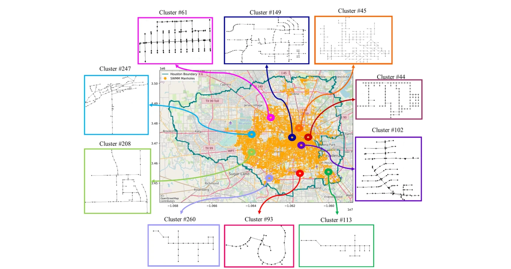
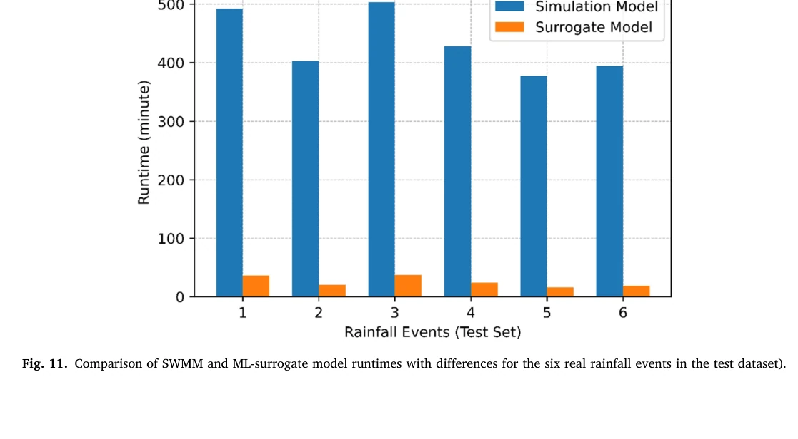
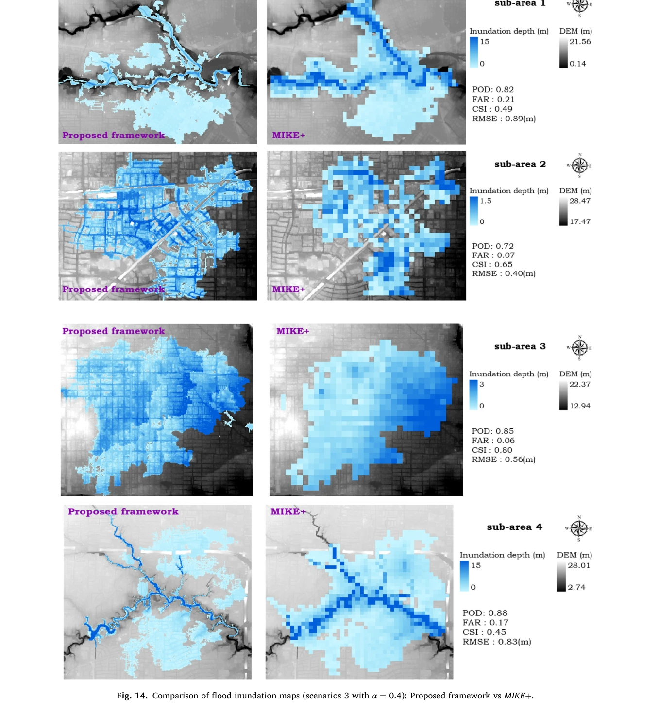
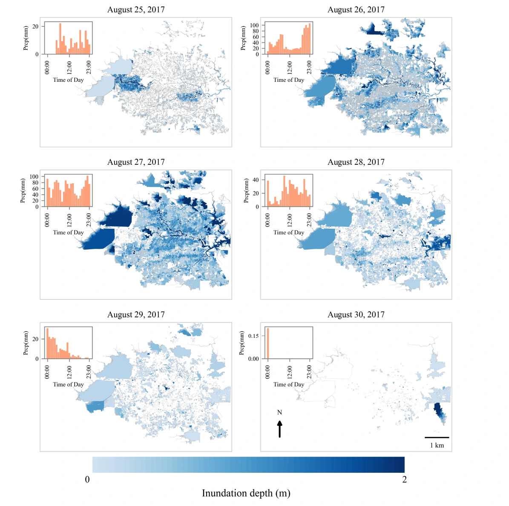
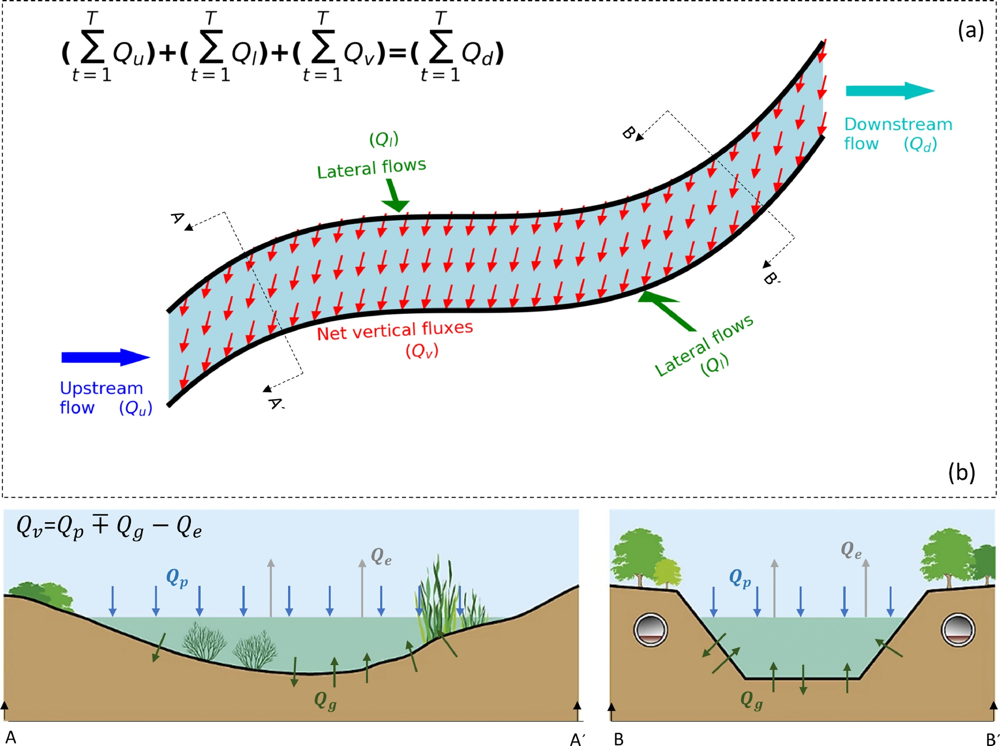
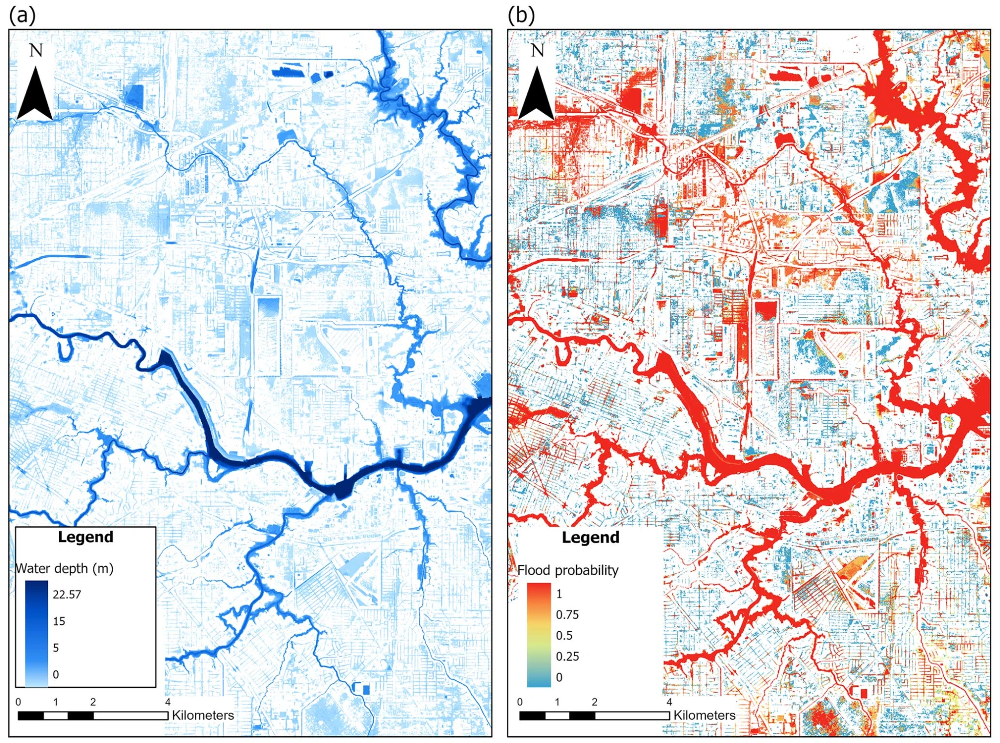
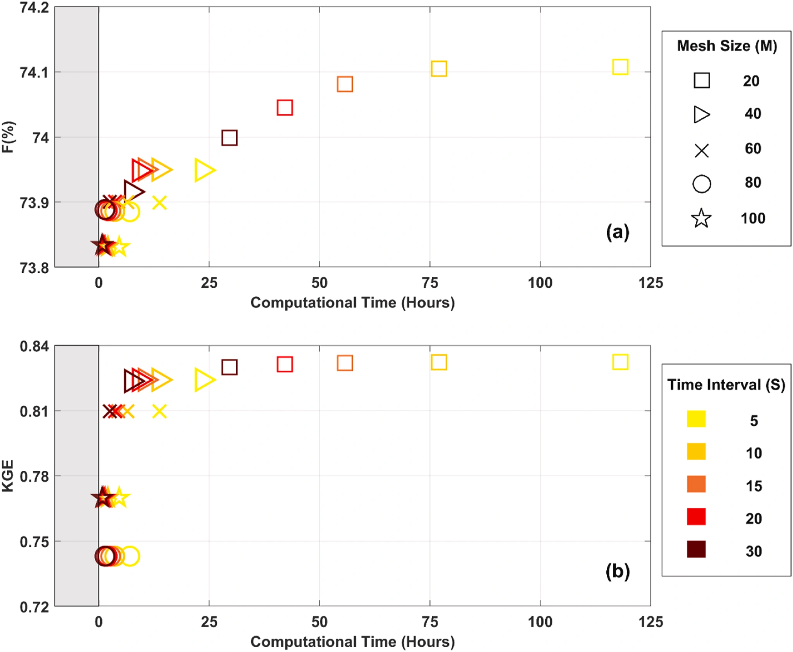
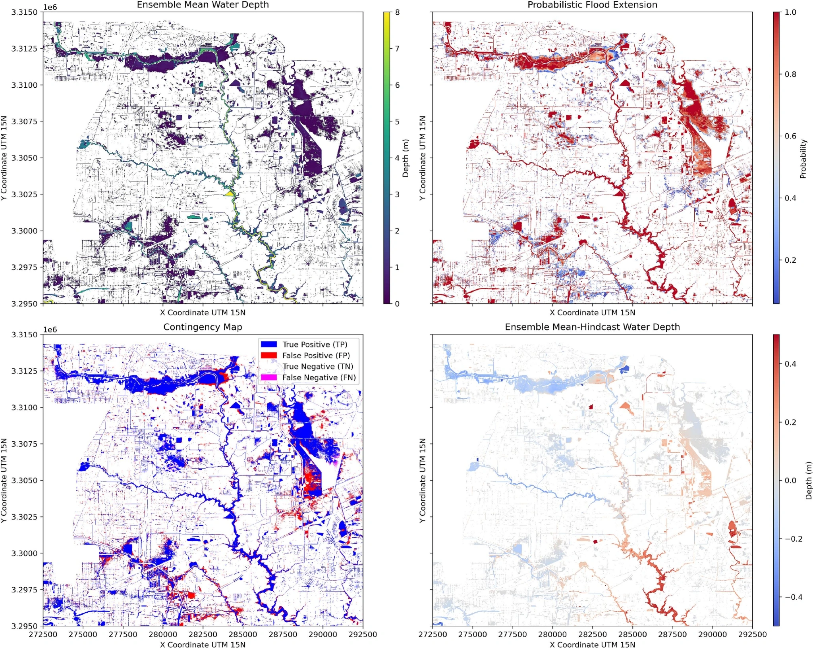

Surrogate modeling: drainage network representation
Representative drainage-network clusters used in the metropolitan-scale modeling study.
View publication ↗Exploring flood dynamics and inundation across riverine and urban environments.
HydroExLab investigates flood inundation in urban and riverine environments, with published work on metropolitan-scale modeling, hydrodynamic model behavior, and uncertainty in flood mapping. The selected figures below illustrate representative findings from peer-reviewed publications.
Selected research on metropolitan-scale inundation and computationally efficient urban flood simulation.

Representative drainage-network clusters used in the metropolitan-scale modeling study.
View publication ↗
Comparison of simulation runtimes for the hydraulic model and its machine-learning surrogate.
View publication ↗
Comparison of simulated inundation patterns from the proposed framework and a reference model.
View publication ↗
Simulated inundation depths across six days, August 25–30, 2017.
View publication ↗Published studies examining flood-model behavior, boundary conditions, sensitivity, and probabilistic inundation.

Published schematic illustrating the boundary-conditioning concept.
View publication ↗
Flood inundation maps incorporating multiple precipitation products for Hurricane Harvey.
View publication ↗
Relationship between model accuracy and computational time under alternative model configurations.
View publication ↗
Probabilistic inundation mapping results for Hurricane Beryl.
View publication ↗A figure from the published study on hydraulic model structure and surface roughness can be added here later.
Figures are reproduced from the authors’ published papers for research presentation; publication links provide full source information. Please confirm publisher reuse permissions before public deployment.